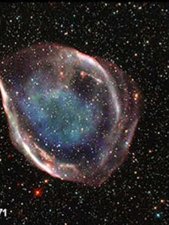
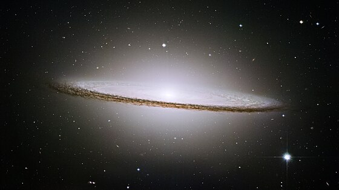

La nébuleuse de la Tête de sorcière se trouve dans la constellation de l'Éridan, à bonne distance de la Terre : 900 années-lumière. Nez pointu, menton en avant, la sorcière de l'espace apparaît bleue dans la lumière réfléchie par Rigel, une étoile supergéante

Le « corps » de la nébuleuse de la Fourmi est fait de deux lobes de gaz brûlant éjectés à plus de 1000 km/s par une étoile mourante.

La nébuleuse de la Rétine a une forme inhabituelle, en cylindre. Du gaz chaud s'échappe de chaque bout et de la poussière assombrit les parois.

Dans le ciel de l'hémisphère Sud, on peut voir, en plus de la Voie lactée, les deux Nuages de Magellan. Ces derniers sont en général considérés comme des galaxies satellites, liées par la gravitation à la Voie lactée. Mais les chercheurs ont récemment suggéré que ces Nuages ne feraient que passer dans notre voisinage.
À 28 millions d'années-lumière de la Terre, dans la constellation de la Vierge, se trouve une galaxie spirale au noyau très brillant, renflé et inhabituellement large. Celui-ci est entouré d'une bande sombre, inclinée, de poussières. La galaxie du Sombrero, qu'on voit ici de côté, doit ce nom à sa forme de chapeau mexicain.
